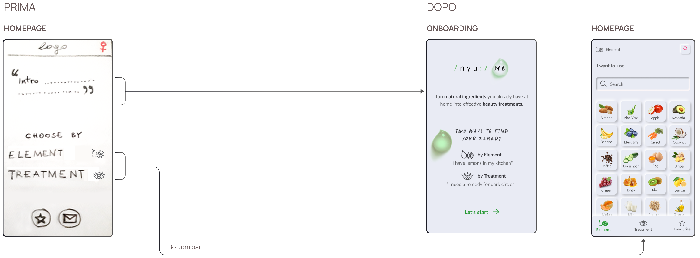

NYU⋅ME, APP DIY BEAUTY SENZA SPRECHI
Da più di 10 minuti di ricerche caotiche a 60 secondi
Un'app che ti aiuta a creare trattamenti per viso, corpo e capelli con gli ingredienti che hai già in casa. Obiettivo: Aiutare le persone a creare trattamenti per viso, corpo e capelli con ingredienti naturali che hanno già in casa.
Ruolo: End-to-end Product Designer (UX/UI).
Timeline: 6 settimane.

BUSINESS PROBLEM
| Molti cercavano, ma quasi nessuno proseguiva
Il progetto è nato mentre vivevo a Londra,
dove i trattamenti homemade erano ovunque nel mio cerchio lavorativo e sociale.
C'era un comportamento che si ripeteva: le persone cercavano rimedi naturali online
e poi raramente li preparavano. Non era una mancanza di contenuti.
I rimedi erano sparsi tra blog e social media, e gli ingredienti spesso non erano disponibili in dispensa.
Target: utenti tra 20-44 anni, appassionati di lifestyle naturale e DIY.
SOLUZIONE & RISULTATI
| Partire da ciò che hai invece che da ciò che vuoi risolvere
Ho ribaltato la logica abituale dei contenuti beauty.
Invece di partire dal problema da trattare, l'app parte da un vincolo reale: cosa posso fare con quello che ho in dispensa?
Due percorsi
Per Elemento: ingrediente → zona del corpo → problema → rimedio, oppure
per Trattamento: zona del corpo → problema → ingredienti filtrati → rimedio.
rimedi 1+1
Un ingrediente principale più basi comuni, così l'utente può sempre prepararlo.
60 secondi per trovare un rimedio
Nei test di usabilità, contro i più di 10 minuti che i rispondenti al questionario dichiarano di impiegare online.

ANALISI COMPETITOR
| Il mercato ignora cos'hai in dispensa
Ho analizzato i tre competitor diretti negli app store:
Daily Beauty Care (1M+ download), BBeautiful (500K+) e Beauty Care (10K+), con metodo Matrix e SWOT.
Nessuno offre la ricerca per ingrediente o parte da "cos'ho in dispensa".
Tutti sono organizzati per categoria beauty.
The gap non riguarda solo le app.
Online, blog e social media sono organizzati
per problema da trattare e ignorano il vincolo di ciò che l'utente ha già in casa.
Il mercato offriva moltissimi rimedi e nessun modo per partire dagli ingredienti.

RICERCA UTENTE
| Misurare i vincoli
L'interesse per il natural beauty era già noto, quindi non serviva validarlo.
Mi serviva quantificare i vincoli e far emergere le preferenze.
Ho condotto un questionario quantitativo con 93 partecipanti tra 20-44 anni, con tre obiettivi:
quantificare i tempi di ricerca e le cause di abbandono, validare il doppio modello mentale
(ingrediente contro problema) e capire i vincoli su ingredienti disponibili e complessità.
- 44% impiega 10+ minuti per trovare un rimedio cercando tra blog e social media sparsi.
- 52% vuole usare al massimo 1-2 ingredienti. Le ricette troppo complesse vengono abbandonate.
- 48% sceglie in base a ciò che ha già.
- 78% rinuncia per mancanza di ingredienti. È la causa principale di abbandono.

PERSONAS
Dalla ricerca sono emersi due profili.
- Emma cerca un beauty hack partendo dagli ingredienti che ha già.
- Kate cerca un trattamento specifico.

IMPLICAZIONI DI DESIGN
- Un doppio flusso, costruito su modelli mentali opposti
Gli utenti possono partire da un ingrediente o da un trattamento. - Rimedi 1+1
Un ingrediente principale più basi universali come olio, zucchero e farina. Previene l'abbandono, perché l'utente può sempre preparare il rimedio. - Filtri contestuali nel flusso per trattamento
Dopo aver selezionato un problema, l'app mostra solo gli ingredienti compatibili e questo garantisce l'abbinamento tra problema e ingrediente.
ARCHITETTURA DELL'INFORMAZIONE
La gerarchia dell'app con la struttura dei due flussi.

WIREFLOW

TEST DI USABILITÀ
| 5 task, 5 utenti e nessun errore
Ho testato il prototipo con 5 utenti tra i 25 e i 32 anni, in un hallway test.
Ho misurato il tempo medio per schermata e azione, il tempo di completamento dei task, il primo tap e le heatmap.
Seguono due scenari:
Task scenario 1: flusso per Elemento
Hai comprato troppi limoni e stanno per scadere.
Quindi ai deciso di fare una maschera per capelli.
Quale percorso sceglieresti per vedere cosa puoi fare per i tuoi capelli con i limoni?

Task scenarios 2: flusso per Trattamento
Hai appena scaricato l'app e vorresti fare una maschera per le occhiaie.
Dove andresti per trovare il rimedio che cerchi?

- 60 secondi di tempo di completamento.
- 0% tasso di errore Tutti e 5 gli utenti hanno completato i task senza errori.
NAMING & LOGOTIPO
| Nyu⋅Me = new me
Il nome richiama la pronuncia inglese di «new me» ed è accompagnato da simboli fonetici che ne enfatizzano il suono.
La goccia rappresenta la purezza dell'acqua, evocando naturalezza e cura.
ITERAZIONE UI
| Un tap in meno e una schermata per spiegare perché
Nei wireframe testati, Elementi e Trattamenti si raggiungevano tramite una schermata home intermedia, aperta da un logo fisso.
I test hanno mostrato che era un passaggio in più.
Nella UI finale li ho spostati nella barra inferiore, riducendo la navigazione da 2 tap a 1.

DESIGN KIT
| Soft UI in equilibrio tra estetica e accessibilità
I componenti usano colori naturali distintivi che risaltano su uno sfondo neutro e monocromatico.

CONSIDERAZIONI FINALI
| CONSIDERAZIONI FINALI
Ho esplorato tre opzioni:
- Banner pubblicitari
- ALink di affiliazione alla fine di ogni rimedio, con partner come e-commerce biologici e produttori locali
- Freemium: rimedi 1+1 gratuiti, abbonamento per contenuti esclusivi come ricette zero-waste di stagione